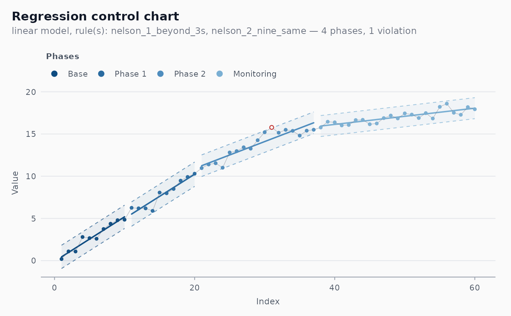
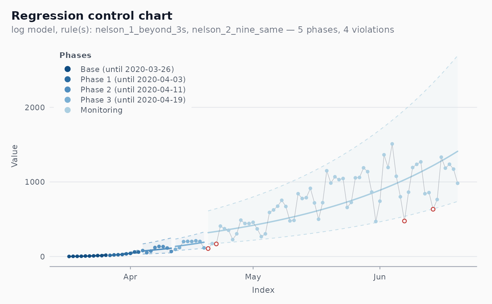

Regression-based control chart for processes with trend
Source:R/chart-regression.R
shewhart_regression.RdFits a chosen model to the data (linear, log, log-log, Gompertz, logistic, or a user-supplied formula), then constructs control limits around the fitted curve using the moving-range estimator on the residuals (Wheeler 1992). Optionally detects phase changes automatically via runs tests on the residuals and re-fits each phase.
Usage
shewhart_regression(
data,
value,
index,
model = c("auto", "linear", "log", "loglog", "gompertz", "logistic"),
formula = NULL,
dummy = NULL,
start_base = NULL,
phase_changes = NULL,
phase_rule = "nelson_2_nine_same",
rules = c("nelson_1_beyond_3s", "nelson_2_nine_same"),
sigma_method = c("mr", "median_mr", "biweight", "sd"),
lower_bound = NA_real_,
limits_scale = c("original", "model"),
locale = getOption("shewhart.locale", "en"),
verbose = NULL
)Arguments
- data
A data frame.
- value
Tidy-eval column reference for the response.
- index
Tidy-eval column reference for the predictor (typically time, but can be any continuous variable).
- model
Character. One of
"auto"(Box-Cox guidance),"linear","log"(fitslog(y + 1) ~ N),"loglog","gompertz","logistic". For full control, supplyformulainstead. With"auto", each phase gets the Box-Cox profile maximiserlambdaofy + 1, rounded to the nearest rung of the ladder that the menu offers:lambda < 0.25selects"log", any larger value selects"linear"(a square-root lambda near 0.5 has no dedicated model and maps to"linear";"loglog"is a stronger transform than log and is never chosen automatically).- formula
Optional one-sided or two-sided formula referencing columns in
data. If provided, overridesmodel. The model may reference.N, the position of the observation within its phase. When the left-hand side is a recognised transformation of the response –log(y),log(y + c),log(y, base),log10(),log2(),log1p()orsqrt(), optionally wrapped inI()– the fitted values are back-transformed to the scale of the data andlimits_scale = "model"is available.- dummy
Optional tidy-eval column reference for an additive covariate (a "dummy" in the original v0.1 nomenclature; can be any factor or numeric covariate the user wants to adjust for, such as day-of-week effects or treatment indicators).
- start_base
Integer or
NULL. Number of initial observations used to estimate the first (base) phase. With automatic phase detection,NULL(the default) means 10. Whenphase_changesis supplied,NULLmeans the base phase ends just before the first supplied change; an explicitstart_baseadds a cut at observationstart_base + 1in addition tophase_changes.- phase_changes
Optional vector of index values at which to force a phase change (the observation whose index equals the value starts the new phase). If
NULL, phase changes are detected automatically using the suppliedphase_rule. A zero-length vector (e.g.integer(0)) fits a single phase without detection; it then needs only 3 observations, which is what a prospective replay needs to calibrate one phase at a time (see Details).- phase_rule
Character. Runs rule used to detect new phases. See
shewhart_rules_available(). Default Nelson 2 (9 points same side; ARL_0 = 2^9 - 1 = 511). For backward compatibility with v0.1.x, use"we_seven_same"(7 points; ARL_0 = 2^7 - 1 = 127).- rules
Character vector of rules to flag on the final chart.
- sigma_method
One of
"mr"(default),"median_mr","biweight"(Tukey-style robust), or"sd".- lower_bound
Numeric scalar or
NA. If non-NA, lower limit is clipped at this value (commonly 0 for counts). DefaultNA(no clipping). Stored inmetadataand honoured bymonitor().- limits_scale
Scale on which the limits are built. With
"original"(default), sigma is estimated from the residuals on the scale of the data and the bandfitted +- 3 sigmais symmetric. With"model", sigma is estimated from the moving ranges of the residuals on the transformed scale of the model's left-hand sideg(y); the bandg_hat +- 3 sigmais formed there and centre line and limits are back-transformed withg^-1. Withmodel = "log"this gives the multiplicative, asymmetric bands of Perla et al. (2020) and Ferraz et al. (2020) – an individuals chart on the residuals oflog(1 + y) ~ t– whose lower limit never falls below 0. For models whose left-hand side is the raw response ("linear","gompertz","logistic", or a formula such asy ~ .N) the two options coincide. With"model", the.sigmacolumn of the augmented tibble (andmetadata$phase_sigma,sigma_hat) is on the model scale, and two extra columns hold what the runs rules are applied to:.model_value(the transformed observationg(y)) and.model_center(the fitted valueg_hat).- locale
Character. One of
"en","pt","es","fr".- verbose
Logical. Print progress messages?
Value
A shewhart_chart object of subclass shewhart_regression.
The fits slot contains a list of fitted model objects (one per
phase; a phase with fewer than 3 observations reuses the previous
phase's fit). The metadata slot additionally stores
phase_n_end (the last within-phase position .N reached by each
phase's fit) and phase_sigma (the residual sigma of each phase),
which monitor() uses to extrapolate the last phase, together
with limits_scale and lower_bound. The sigma_hat slot is the
median of the per-phase sigmas.
The .phase_label column names the phases "Base", "Phase 1", ...,
"Monitoring" (localised). When the index column is a Date (or a
date-time), every phase but the last also carries its end date,
e.g. "Base (until 2020-05-11)". The first index value of each
phase is the date on which it starts.
Details
This is the package's flagship chart, intended for trended or
non-stationary processes for which classical Shewhart charts give
systematically wrong limits. See the vignette
regression-charts for a thorough discussion and examples.
Models that take the logarithm of the response ("log",
"loglog", and "auto" whenever it selects "log") require
non-negative values: log(1 + y) is undefined for a negative count
such as a bulletin that revises a cumulative total downwards. The
function stops with an error naming the offending row instead of
returning NaN limits; filter or reconcile such rows first.
A Phase I chart refits every phase, including the last one (labelled
"Monitoring"). To judge new observations against the limits of the
last phase projected forward, as in a prospective analysis,
calibrate on the data up to the end of the last phase with
calibrate() and pass the rest to monitor(): it continues .N,
uses the stored sigma, and honours limits_scale and lower_bound.
A prospective replay in the manner of Ferraz et al. (2020) chains
these steps one phase at a time: calibrate a single phase
(phase_changes = integer(0)) on its first observations, monitor
the rows that follow, and start the next phase at the first index
after the first run flagged by "we_seven_same" (column
.flag_we_seven_same of the monitored chart, with rules = "we_seven_same").
References
Mandel, B. J. (1969). The Regression Control Chart. Journal of Quality Technology, 1(1), 1-9. doi:10.1080/00224065.1969.11980341
Wheeler, D. J., & Chambers, D. S. (1992). Understanding Statistical Process Control (2nd ed.). SPC Press.
Perla, R. J., Provost, S. M., Parry, G. J., Little, K., & Provost, L. P. (2020). Understanding variation in reported COVID-19 deaths with a novel Shewhart chart application. International Journal for Quality in Health Care, 32(10), 685-688. doi:10.1093/intqhc/mzaa069
Ferraz, C., Petenate, A. J., Leite Wanderley, A., Ospina, R., Torres, J., & Peruzzi Moreira, A. (2020). COVID-19: monitoramento por graficos de Shewhart. Revista Brasileira de Estatistica, 78(245), 23-41.
Box, G. E. P., & Cox, D. R. (1964). An Analysis of Transformations. Journal of the Royal Statistical Society, Series B, 26(2), 211-252. doi:10.1111/j.2517-6161.1964.tb00553.x
Examples
# \donttest{
set.seed(1)
df <- data.frame(
t = 1:60,
y = c(1:30 * 0.5 + rnorm(30, sd = 0.5), # phase 1: linear trend
15 + 1:30 * 0.1 + rnorm(30, sd = 0.5)) # phase 2: shift + slowdown
)
fit <- shewhart_regression(df, value = y, index = t, model = "linear")
print(fit)
#>
#> ── Shewhart chart regression-based ─────────────────────────────────────────────
#> • Observations / subgroups: 60
#> • Phase: "phase_1"
#> • Sigma estimate ("mr"): 0.4435
#>
#> ── Control limits ──
#>
#> # A tibble: 4 × 7
#> .phase cl_first ucl_first lcl_first cl_last ucl_last lcl_last
#> <int> <dbl> <dbl> <dbl> <dbl> <dbl> <dbl>
#> 1 0 0.443 1.82 -0.936 5.19 6.57 3.81
#> 2 1 5.52 6.96 4.07 10.2 11.7 8.79
#> 3 2 11.2 12.5 9.96 16.3 17.6 15.0
#> 4 3 15.9 17.2 14.7 18.1 19.3 16.8
#> ── Rule violations ──
#>
#> ! 1 violation across 2 rules.
#> nelson_1_beyond_3s: 1 hit.
ggplot2::autoplot(fit)

# Multiplicative limits built on the log scale (Perla et al. 2020;
# Ferraz et al. 2020): base of 10 days, 7-point shift rule
br <- subset(cvd_brazil, region == "BR" & date >= as.Date("2020-03-17") &
date <= as.Date("2020-06-20"))
fit_log <- shewhart_regression(br, value = new_deaths, index = date,
model = "log", limits_scale = "model",
phase_rule = "we_seven_same")
ggplot2::autoplot(fit_log, legend_position = "inside")

# }